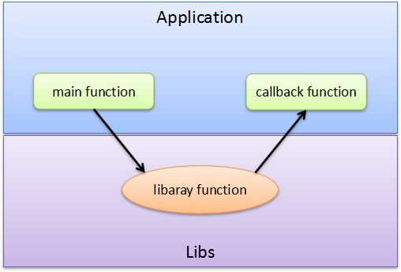
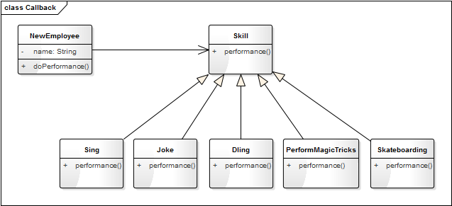

- 00 生活中的设计模式：启程之前，请不要错过我.md.html
- 01 监听模式：坑爹的热水器.md.html
- 02 适配模式：身高不够鞋来凑.md.html
- 03 状态模式：人与水的三态.md.html
- 04 单例模式：你是我生命的唯一.md.html
- 05 职责模式：我的假条去哪了.md.html
- 06 中介模式：找房子问中介.md.html
- 07 代理模式：帮我拿一下快递.md.html
- 08 装饰模式：你想怎么穿就怎么穿.md.html
- 09 工厂模式：你要拿铁还是摩卡.md.html
- 10 迭代模式：下一个就是你了.md.html
- 11 组合模式：自己组装电脑.md.html
- 12 构建模式：想要车还是庄园.md.html
- 13 克隆模式：给你一个分身术.md.html
- 14 策略模式：怎么来不重要，人到就行.md.html
- 15 命令模式：大闸蟹，走起！.md.html
- 16 备忘模式：好记性不如烂笔头.md.html
- 17 享元模式：颜料很贵必须充分利用.md.html
- 18 外观模式：学妹别慌，学长帮你.md.html
- 19 访问模式：一千个读者一千个哈姆雷特.md.html
- 20 生活中的设计模式：与经典设计模式的不解渊源.md.html
- 21 生活中的设计模式：那些未完待续的设计模式.md.html
- 22 深入解读过滤器模式：制作一杯鲜纯细腻的豆浆.md.html
- 23 深入解读对象池技术：共享让生活更便捷.md.html
- 24 深入解读回调机制：把你技能亮出来.md.html
- 25 谈谈我对设计模式的理解.md.html
- 26 谈谈我对设计原则的思考.md.html
- 27 谈谈我对项目重构的看法.md.html
24 深入解读回调机制：把你技能亮出来
铁打的公司，流水的员工！职场中经常有新的员工来，也有老的员工走。为迎接新员工的到来，Tony 所在的公司每个月都有一个新人见面会，在见面会上每个新人都要给大家表演一个节目，节目类型不限，内容随意！只要把你的技能都亮出来，把最有趣的一面展示给大家就行。有的人选择唱一首歌，有的人拉一曲 Ukulele，有的人会说一搞笑段子，有的人会表演魔术，还有的人耍起了滑板，真是各种鬼才……
用程序来模拟生活
职场处处艰辛，但生活充满乐趣！每个人有自己的爱好，每个人也有自己擅长的技能。在新人见面会上把自己最擅长的一面展示出来，是让大家快速记住你的最好方式。下面我们用程序来模拟一下这个场景。
源码示例：
class Employee:
"""公司员工"""
def __init__(self, name):
self.__name = name
def doPerformance(self, skill):
print(self.__name + "的表演:", end="")
skill()
def sing():
"""唱歌"""
print("唱一首歌")
def dling():
"""拉Ukulele"""
print("拉一曲Ukulele")
def joke():
"""说段子"""
print("说一搞笑段子")
def performMagicTricks():
"""表演魔术"""
print("神秘魔术")
def skateboarding():
"""玩滑板"""
print("酷炫滑板")
测试代码：
def testSkill():
helen = Employee("Helen")
helen.doPerformance(sing)
frank = Employee("Frank")
frank.doPerformance(dling)
jacky = Employee("Jacky")
jacky.doPerformance(joke)
chork = Employee("Chork")
chork.doPerformance(performMagicTricks)
Kerry = Employee("Kerry")
Kerry.doPerformance(skateboarding)
输出结果：
Helen的表演:唱一首歌
Frank的表演:拉一曲Ukulele
Jacky的表演:说一搞笑段子
Chork的表演:神秘魔术
Kerry的表演:酷炫滑板
从剧情中思考回调机制
在上面的示例中，每一个新员工都要进行表演，每个人表演自己擅长的技能。因此我们定义了一个 Employee 类，里面有一个 doPerformance 方法，用来进行表演节目；但每个人擅长的技能都不一样，因此我们为每一个上台表演的人定义了一个方法，在调用时传递给 doPerformance。像这样，将一个函数传递给另一个函数的方式叫回调机制。
回调机制
把函数作为参数，传递给另一个函数，延迟到另一个函数的某个时刻执行的过程叫回调。假设有一个函数叫 callback(args); ，这个函数可以作为参数传递给另一个函数 otherFun(fun, args); ，如 otherFun(callback, [1, 2, 3])。那么 callback 叫回调函数，otherFun 叫高阶函数，也叫包含（调用）函数。
回调函数的本质是一种模式（一种解决常见问题的模式），或说一种机制；因此我们把回调函数的实现方式也被称为回调模式或回调机制。
在上面示例中，doPerformance 就是一个高阶函数（包含函数），为每一个表演者定义的方法（如 sing、dling、joke）就是回调函数。
设计思想
回调函数来自一种著名的编程范式——函数式编程，在函数式编程中可以指定函数作为参数。函数是 Python 内建支持的一种封装，我们通过把大段代码拆成函数，通过一层一层的函数调用，就可以把复杂任务分解成简单的任务，这种分解可以称之为面向过程的程序设计，也称为函数式编程。把函数作为参数传入给另一个函数的回调机制是函数式编程的核心思想。
我们在程序开发中经常会用到一些库，如 Python 内置的库，第三方库；这些库会定义一些通用的方法（如 filter()、map()），这些都是高阶函数。我们在调用的时候要先定义一个回调函数以实现特定的功能，并将这个函数作为参数传递给高阶函数。其过程如下图：

当我们作为参数传递一个回调函数给另一个函数时，只传递了这个函数的定义，并没有在参数中执行它，而是在包含函数函数体内的某个位置被执行，就像回调函数在包含函数的函数体内定义一样。
【应用实例】
如我们要求一个整数数组 [2, 3, 6, 9, 12, 15, 18] 中所有的偶数和大于 10 的数，可以这样实现：
def isEvenNumber(num):
return num % 2 == 0
def isGreaterThanTen(num):
return num > 10
def getEvenNumbers(fun, elements):
newList = []
for item in elements:
if (fun(item)):
newList.append(item)
return newList
def testCallback():
elements = [2, 3, 6, 9, 12, 15, 18]
list1 = getEvenNumbers(isEvenNumber, elements)
list2 = getEvenNumbers(isGreaterThanTen, elements)
print("所有的偶数：", list1)
print("大于10的数：", list2)
结果如下：
所有的偶数： [2, 6, 12, 18]
大于10的数： [12, 15, 18]
上面这个例子，我们只是演示一下回调函数如何实现。在真正的项目中，可直接使用 Python 内置的 filter 函数和 lambda 表达式，代码更简洁，如下：
list1 = list(filter(lambda x: x % 2 == 0, elements))
list2 = list(filter(lambda x: x > 10, elements))
面向对象的方式实现回调机制
回调函数属于函数式编程，也就是面向过程式的编程。在面向对象的编程中，如何实现这种机制呢？特别是对于不支持函数作为参数来传递的语言（如 Java）。回想一下学习过的这些设计模式，也许你能找到。
对了，就是策略模式。我们知道策略模式是定义一系列算法，将每个算法都封装起来，并且使他们之间可以相互替换。
实战应用
下面，我们用策略模式来实现示例中的这种回调机制。
源码示例：
from abc import ABCMeta, abstractmethod
# 引入ABCMeta和abstractmethod来定义抽象类和抽象方法
class Skill(metaclass=ABCMeta):
"""技能的抽象类"""
@abstractmethod
def performance(self):
"""技能表演"""
pass
class NewEmployee:
"""公司新员工"""
def __init__(self, name):
self.__name = name
def doPerformance(self, skill):
print(self.__name + "的表演:", end="")
skill.performance()
class Sing(Skill):
"""唱歌"""
def performance(self):
print("唱一首歌")
class Joke(Skill):
"""说段子"""
def performance(self):
print("说一搞笑段子")
class Dling(Skill):
"""拉Ukulele"""
def performance(self):
print("拉一曲Ukulele")
class PerformMagicTricks(Skill):
"""表演魔术"""
def performance(self):
print("神秘魔术")
class Skateboarding(Skill):
"""玩滑板"""
def performance(self):
print("酷炫滑板")
测试代码：
def testStrategySkill():
helen = NewEmployee("Helen")
helen.doPerformance(Sing())
frank = NewEmployee("Frank")
frank.doPerformance(Dling())
jacky = NewEmployee("Jacky")
jacky.doPerformance(Joke())
chork = NewEmployee("Chork")
chork.doPerformance(PerformMagicTricks())
Kerry = NewEmployee("Kerry")
Kerry.doPerformance(Skateboarding())
自己测试一下，结果和回调函数的方式是一样的。
这种用面向对象的方式实现的类图如下：

有人可能会问上面这个类图和策略模式不太一样啊！策略模式中 Context 和 Strategy 是一种聚合关系，即 Context 中存有 Strategy 的对象；而这里 NewEmployee 和 Skill 是一个依赖关系，NewEmployee 不存 Skill 的对象。这里要说明的设计模式不是一成不变的，是可以根据实现情况灵活变通的。如果你愿意，依然可以写成聚合关系，但代码将不会这么优雅。
Java 的实现：
用 Java 这种支持匿名类的语言来实现，更能感受到回调的味道，代码也更简洁和优雅，如下：
/**
* 定义一个技能的接口
*/
interface ISkill {
public void performance();
}
/**
* 员工类
*/
public class NewEmployee {
private String name;
public NewEmployee(String name) {
this.name = name;
}
public void doPerformance(ISkill skill) {
System.out.print(this.name + "的表演:");
skill.performance();
}
/**
* 用Main方法来测试
*/
public static void main(String args[])
{
NewEmployee helen = new NewEmployee("Helen");
helen.doPerformance(new ISkill() {
@Override
public void performance() {
System.out.println("说一搞笑段子");
}
});
NewEmployee frank = new NewEmployee("Frank");
frank.doPerformance(new ISkill() {
@Override
public void performance() {
System.out.println("拉一曲Ukulele");
}
});
}
}
设计要点
在设计回调机制的程序时要注意以下几点：
- 在支持函数式编程的语言中，可以使用回调函数实现。作为参数传递的函数称为回调函数，接受回调函数（参数）的函数称为高阶函数或包含函数。
- 只支持面向对象编程的语言中，可以使用策略模式来实现回调机制。
回调机制的优点
- 避免重复代码
- 增强代码的可维护性
- 有更多定制的功能
回调机制的缺点
可能出现“回调地狱”的问题，即多重的回调函数调用。如回调函数 A 被高阶函数 B 调用，同时 B 本身又是一个回调函数被函数 C 调用。我们应尽量避免这种多重调用的情况，否则代码可读性很差，程序将很难维护。
应用场景
- 在第三方库和框架中。
- 异步执行（如读文件，发送 HTTP 请求）。
- 在你需要更多的通用功能的地方更好地实现抽象（可处理各种类型的函数）。